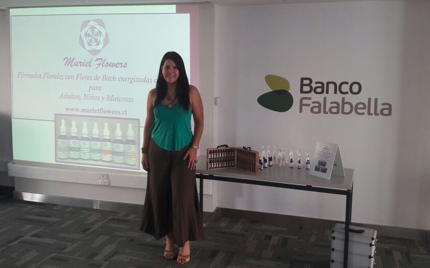

Ven a descubrir este mágico mundo de sanación y equilibrio que te llevará al Bienestar

Muriel Lama
Maestra en Reiki, Terapeuta de Flores de Bach, Biomagnetismo y Meditación, Radiestesista, Músicoterapeuta, Cantante y Compositora. Durante más de 10 años se ha desarrollado como terapeuta tanto en Brasil como en Chile logrando excelentes y gratificantes resultados.
Terapias/Cursos/
Cursos para Empresas

Terapias
- Flores de Bach
- Reiki
- Biomagnetismo

Cursos
- Flores de Bach
- Reiki I, II y III
- Meditación

Cursos para Empresas
- Capacitación BmS, (Bienestar más Salud)
- Meditación
- Reiki
Galeria

Gallery Item 1
By: Muriel Lama

Gallery Item 2
By: Muriel Lama
Gallery Item 1
By: Muriel Lama
Gallery Item 3
By: Muriel Lama

Gallery Item 5
By: Muriel Lama
Gallery Item 6
By: Muriel Lama
Galley Item 7
By: Muriel Lama
Gallery Item 8
By: Muriel Lama

Galley Item 9
By: Muriel Lama